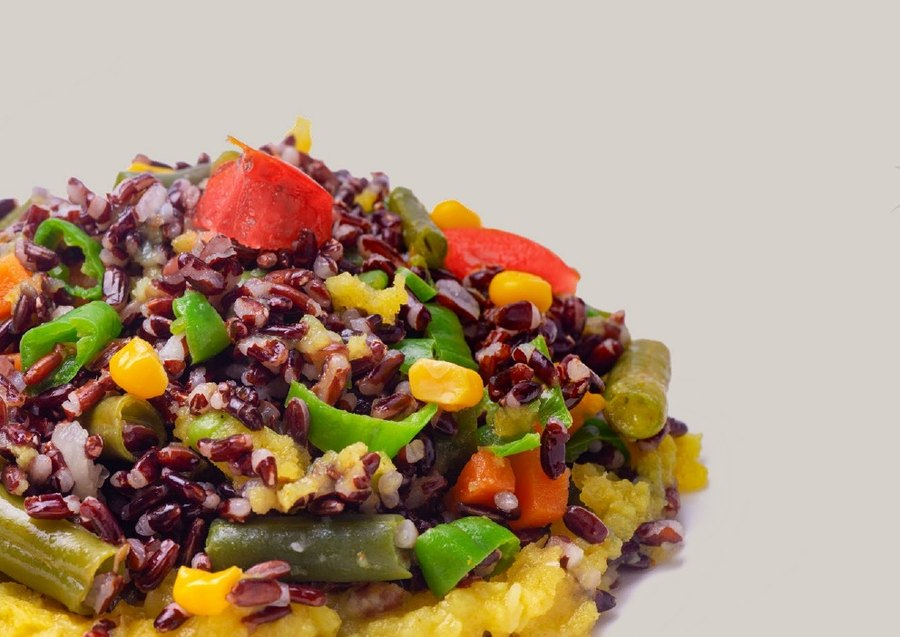

What we're working on, and with whom.
"Every project represents not only a contribution to the advancement of knowledge, but a direct investment in the effectiveness of the protocols applied in the field."
Agro-sciences
Applied research on sustainable agriculture, biological protection and land management.
Filiera Forestale — Prevention of hydrogeological instability
An integrated forest-management model for the chestnut groves of the southern Apennines, where scientific data becomes an agronomic decision and new economic value for the region.
The programme combines molecular DNA monitoring and satellite modelling to safeguard biodiversity and the climate resilience of the forest ecosystems of Southern Italy. The SMART-C-SINK protocol quantifies organic carbon sequestration in a certifiable way, turning it into certified carbon credit. OASIS handles field entomological and fungal monitoring, satellite remote sensing (LiDAR and drones) and the biocontrol of invasive species, with molecular identification via DNA Barcoding.
Beneficiary: OASIS S.r.l. (biodiversity monitoring and biocontrol)
Participant: Municipality of Moio della Civitella (Cilento National Park)
Regions: Campania · Calabria · Umbria
Funding: 5th Supply-Chain Contracts call · PNC – M2C1 Inv. 13.4 · NextGenerationEU · ISMEA

SIMPL — Tomato health
Innovative strategies for monitoring and preventing infection by downy mildew (Phytophthora infestans) and powdery mildew (Leveillula taurica): an integrated approach to tomato health.
A research project on techniques for monitoring and preventing two of the most damaging fungal diseases of the tomato, combining field sensors and biological analysis.
Consultants: OASIS S.r.l. · CREA (Council for Agricultural Research)
Funding: iNEST — Interconnected Nord-Est Innovation Ecosystem (NRRP · NextGenerationEU · MUR)
 ★ SMAU Innovation Award 2018
★ SMAU Innovation Award 2018
POSSIBILE — Biostimulants for organic and integrated farming
Development of innovative "biostimulant and resistance-inducer" products for use in organic and integrated pest management (IPM) farming methods.
The idea is to use biostimulants to prevent plant diseases and reduce — or eliminate — the use of plant-protection products: a formulation introduced into the soil that, by combining organic substances and micro-organisms already present in nature, strengthens the natural defences of crops. The trials assessed formulations based on fungi of the Trichoderma genus, able to establish symbiotic interactions and activate the plant's natural defences. Started in May 2017, 36 months duration.
Partners: Sapienza University of Rome (Dept. of Environmental Biology) · University of Molise (Faculty of Agriculture)
Scientific lead: Dr Michelina Ruocco (IPSP-CNR)
Funding: European Horizon 2020 programme

SOS TATA — Technology transfer in agriculture
An applied-research project aimed at transferring scientific results to the farming sector, with particular attention to technical communication in accessible language.
The project brought together companies, universities and public research centres to take technical and scientific innovations directly to operators in the sector. The experience is documented in three videos from the closing conference, produced by Edonè Films Production:
▶ Part 1 — Project presentation
▶ Part 2 — Technical and scientific deep dive
▶ Part 3 — Conclusions and outlook
BIOBASE — Bio-formulations for sustainable agriculture
Development of bio-formulations from plant extracts and beneficial micro-organisms for sustainable agricultural applications.
The project studies, identifies and assesses new molecules of plant origin to be combined with strains of useful micro-organisms, in order to develop bio-formulations able to prevent and counter the onset of disease while ensuring quality production. It involves the development of formulations with bactericidal and nematicidal properties and the use of biosensors for real-time assessment of the microbial fertility of soils.
Partner: Samagri S.r.l. (innovative start-up)
Coordinator: Dr Davide Della Porta (OASIS S.r.l.)
Funding: iNEST — Interconnected Nord-Est Innovation Ecosystem (NRRP · NextGenerationEU · MUR)
SMART-TINY — Mediterranean Tiny Forests
Development of advanced monitoring and recognition strategies for the characterisation and commercialisation of Mediterranean Tiny Forests (TFMed).
The project adapts the Miyawaki method to the creation of Tiny Forests — fast-growing urban forest micro-ecosystems — in the Mediterranean context. It combines biological monitoring (entomofauna, soil microbiome via DNA metabarcoding), cloud-based digital tools and life-cycle economic analysis, to assess ecosystem services, biodiversity and sustainability and to propose a "Mediterranean Tiny Forest Package" replicable by institutions and businesses.
OASIS areas: biodiversity monitoring and molecular soil analysis
Funding: European Union — NextGenerationEU · NRRP Mission 4 "Education and Research"
WELLNESS TWENTY HOURS — Antioxidant nutraceutical foods
Formulation and development of new nutraceutical agri-food products with high antioxidant value through the application of mild technologies.
A research and development project to develop agri-food products with high nutraceutical value, obtained with low-impact processes (mild technologies) that preserve the antioxidant properties of the raw materials.
Scientific consultants: OASIS S.r.l.
Scientific lead: Dr Maria Grazia Volpe (ISA-CNR)
Funding: Ministry of Economic Development · Sustainable Growth Fund (Agrifood) · Horizon 2020 · PON "Enterprises & Competitiveness" 2014-2020

SANOPRONTO — Nutritional research turned into a ready meal
From the "SALUTE" R&D project to a range of ready meals formulated for people with a specific dietary need: coeliacs, people with high cholesterol, and diabetics.
The scientific work lies in the formulation. Each line must meet a strict nutritional constraint — no gluten, a favourable lipid profile, a low glycaemic index — without giving up organoleptic quality and with food safety as a prerequisite. This means choosing ingredients and processes that hold all three together: buckwheat and quinoa for gluten-free soups, salmon and flax seeds for Omega-3, Khorasan wheat and pulses for a low glycaemic index.
OASIS handled this part as scientific consultant to the beneficiary company, in a project that brings together businesses from Southern and Central Italy equipped with state-of-the-art food technologies. On the flavour side, the Michelin-starred chef Pasquale Palamaro, of the "Indaco" restaurant at the Regina Isabella Resort in Ischia, collaborated on the project.
Partner: Movinox S.r.l.
Scientific consulting: OASIS S.r.l.
Culinary consulting: chef Pasquale Palamaro — "Indaco" restaurant, Regina Isabella Resort
Funding: European Horizon 2020 programme
Digital technologies & AI
Artificial intelligence and digital systems applied to security and processes.

SASA — Digital security and AI in the banking sector
Digital security through the development of integrated artificial-intelligence systems in the banking sector.
A research project on artificial-intelligence systems applied to cybersecurity for the banking sector, with particular attention to emerging risks.
Scientific consultants: OASIS S.r.l.
Funding: Ministry of Enterprise and Made in Italy · Co-funded by the European Union — National Smart Specialisation Strategy
Biomedical
Applied research in diagnostics, oncology and telemedicine.

RAPSCREEN — Rapid screening for cancers
Development of new predictive tests to provide a RApid SCREENing tool for the detection of cancers.
An R&D project to develop rapid predictive tests in oncology, carried out in partnership with the AMES Group and the University of Campania "Luigi Vanvitelli".
Scientific lead: Prof. Roberto Grassi (Dept. of Precision Medicine — University of Campania L. Vanvitelli)
Scientific consultants: Vanvitelli University — School of Medicine and Surgery · OASIS S.r.l.
Funding: Coesione Italia 21-27 · Co-funded by the European Union · Ministry of Enterprise and Made in Italy

ATHENA — IoT and AI for cardiology telemedicine
An IoT system supported by AI-based monitoring and predictive models, serving telemedicine, remote control and remote assistance for cardiac patients.
An R&D project combining IoT sensors and artificial-intelligence models for remote monitoring and predictive maintenance applied to the care of cardiac patients, with the aim of making remote assistance more continuous and effective.
Scientific consultants: OASIS S.r.l.
Scientific lead: Prof. Vito Pasquale (Dept. of Science and Technology — University of Sannio)
Funding: Innovation Agreements · Ministerial Decree 31/12/2021 (Second call) · Ministry of Enterprise and Made in Italy · NRRP